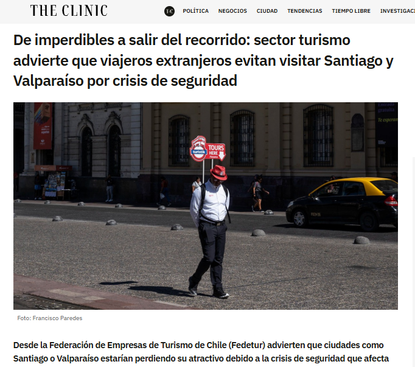

Al querer informarse al respecto, un viajero puede toparse con esto…

Que el propio gobierno de EEUU alerte a sus ciudadanos que hemos dejado de ser un destino puede ser una señal, pero ¿Representa la percepción hacia nosotros que tiene el resto de la comunidad internacional?
El Índice de Paz Global, elaborado por el Institute for Economics and Peace, mide los niveles de paz y seguridad de cada país, tomando en cuenta indicadores como el nivel de criminalidad percibida por la sociedad, posibilidad de actos terroristas y el nivel de criminalidad violenta, entre otros.
Se ve un claro deterioro de la seguridad de nuestro país comparado con otras naciones, siendo este índice una medida utilizada por gobiernos, organismos multilaterales y académicos. Pero, ¿y el resto de personas? Estas utilizan los medios, tanto extranjeros como nacionales.


Ciertamente, hoy los medios han señalado que nos encontramos en una crisis de seguridad a nivel país, en torno a la cual no hay un consenso en su punto de partida. Algunos señalan al estallido social de octubre de 2019, otros al aumento paulatino en los delitos violentos desde 2023, con el ingreso al país de la banda venezolana Tren de Aragua, el aumento de secuestros y casos emblemáticos como el aseisnato de tres carabineros en Cañete en 2024.
Este es uno de los temas principales en los noticiarios y en la agenda pública. La población exige soluciones y el estado está siempre en busca de ellas, pero ¿Cómo se ve esta supuesta crisis en números?
A pesar del leve aumento desde 2021, que coincide con el comienzo del levantamiento de las restricciones sanitarias por el covid-19, la mayor parte de las familias de delitos han visto un descenso con respecto a los años anteriores al estallido social. En el grupo de Otros delitos (que incluye faltas como el ejercicio del comercio ambulante e infracciones de tránsito).
Lo mismo pasa a nivel regional, incluyendo regiones con bastante flujo turístico como la metropolitana por contener la capital y el aeropuerto Arturo Merino Benítez, Valparaíso por recibir cruceros y por la ciudad homónima, las de Magallanes y Antofagasta, las que albergan íconos turísticos como lo son las torres del paine y san pedro de atacama respectivamente.
En todas estas se repiten los mismos patrones: un descenso abrupto a partir del 2020 y a partir de 2021-22 un aumento que no obstante no llega a los niveles anteriores.
Uno esperaría que el número de delitos hubiera al menos sobrepasado al menos los niveles pre pandemia, lo que no es el caso, ni siquiera en la densamente poblada región metropolitana ni en la norteña Antofagasta. Volviendo al foco, ¿Ha afectado esta crisis al turismo en Chile?
La industria del turismo es una de las más importantes para el país, no necesariamente por su volumen (xx% del PIB en 20xx) sino por su potencial de crecimiento, dado la infinidad de atracciones turísticas naturales y, que de momento, las condiciones sociales y de seguridad lo permiten. ¿Cómo se ha comportado el flujo de turistas en los últimos años?
La gran mayoría de los turistas entrantes provienen no de EE. UU. ni de Europa, sino de América del Sur, representando esta alrededor de un 80% de la proporción total de visitantes y dentro del cual se encuentran los principales países que nos visitan.
Se puede apreciar como el flujo solo se ha interrumpido durante la pandemia y que este, a pesar de no estar actualmente en los niveles pre pandemia, se está recuperando de manera exponencial, quedando solo esperar a observar cómo progresa la tendencia este año.
Ahora, desde el flujo de turistas todo indica que nuestra industria va viento en popa, pero, ¿Qué pasa desde la industria del alojamiento?
Como se puede ver, la cantidad de turistas (extranjeros y chilenos) se recupera de forma progresiva, sin alcanzar todavía los niveles previos a 2020. No obstante, La Tasa de ocupación de habitaciones en recintos turísticos SÍ ha vuelto a los niveles pre-pandemia y llegando a su peak histórico con un 41,1% en 2023 y con un actual de 44,4% en lo que va de 2025. El patrón se repite en regiones.
La seguridad se ha transformado en uno de los principales focos de preocupación en el país, pero si miramos los datos, el panorama es menos alarmante de lo que parece: los niveles de delincuencia, incluso en zonas turísticas clave, siguen por debajo de lo registrado antes del estallido social.
Mientras tanto, el turismo ha seguido avanzando. El número de visitantes crece año a año y la ocupación en alojamientos turísticos ha llegado a cifras récord. Esto demuestra que, más allá del ruido mediático, Chile continúa siendo percibido por muchos como un destino seguro y atractivo. Es necesario, no obstante, entender la industria como una de naturaleza cambiante y la que se debe entender a través de estudios que permitan rediseñar las políticas públicas correspondientes para asegurar nuestra adaptabilidad.
Puede que hoy no seamos del todo esa "copia feliz del Edén", pero seguimos siendo un país que recibe con los brazos abiertos y que aún cuenta con el prestigio de su marca país.